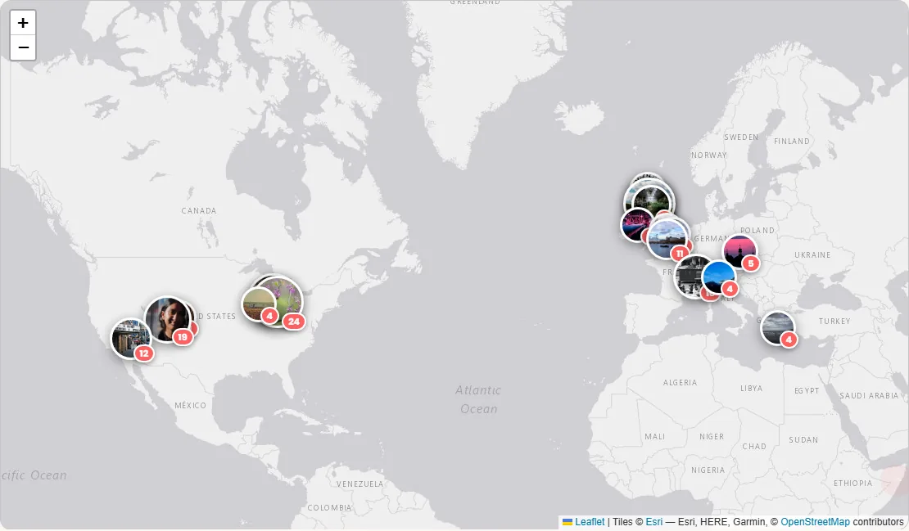

Technology · · 5 min read
Putting My Photos on a Map
264 of my photographs plotted on an interactive world map, this is how the photo map works.
Putting My Photos on a Map
My photography spans two countries I've lived in and a handful I've visited, and a plain grid of thumbnails hides that storytelling, sadly. So, I decided to try my hand with a photo map: an interactive world map where each marker is a place I've photographed. Click a marker and you get a popup of thumbnails; click a thumbnail and the whole region opens as a full-screen slideshow. This is the how to, as part of the series on how this site is built.
Quick jargon guide
- Leaflet: the standard open-source JavaScript library for interactive maps. It draws the map, handles panning and zooming, and places markers; it's the engine under a huge share of the web's non-Google maps.
- Tile server: where the actual map imagery comes from. Maps are served as a grid of small square images ("tiles") drawn on demand as you pan and zoom.
- Geotagging: attaching a location to a photo, either automatically (phones embed GPS in the file) or by hand (me, squinting at a map, going "that was definitely Falkirk").
- Marker / popup: the pin on the map and the bubble that opens when you click it.
- Deep link: a URL that opens the page in a specific state, like the map already zoomed to one region.
The data
The obvious way to geotag photos is to read the GPS coordinates cameras embed in their files. My photos mostly don't have any: they come from a real camera without GPS, not a phone, and even when coordinates exist I strip metadata from published files, usually due to not being super careful about backing up my photos over the years, so some of these are screenshots from websites I put them (GuruShots!). So the map's data is a single hand-maintained JSON file: a list of 30 named regions, each with one latitude/longitude pair and the list of photo numbers taken there, 264 photos placed so far.
{
"name": "Falkirk, Scotland",
"lat": 55.9986, "lng": -3.7839,
"photos": ["247", "248", "249", "..."]
}Placing photos by hand sounds like a chore and mildly is but it's not awful either. A region pin says "around Falkirk", never "this street, this house, this ruin", which matters both for the abandoned places (some locations shouldn't be advertised) and for anywhere near where people live. And meaning: "University of Stirling" and "Ochil Hills" are how I think about where photos were taken, not coordinates.
The map
The mapping library is Leaflet, and in keeping with house policy the library itself is served from this site, not a CDN. The tiles (the map imagery) are external however, coming from Esri's free grey canvases. There are two tile styles, a light one and a dark one, and the map swaps between them when you toggle the site's theme.


Markers, popups, and the slideshow
Each region renders as one circular marker: the first photograph taken there, with the photo count as a badge, its size scaled gently with the number (44 to 64 pixels, so Falkirk's 28 photos read bigger than Dublin's one without turning into a bubble chart). A map of photographs should show photographs; the plain red discs it launched with told you how many without telling you what. I skipped marker-clustering plugins entirely: hand-curated regions are the clustering, done once, with better names than any algorithm would pick.
Clicking a marker opens a popup with the region's name and up to nine thumbnails; clicking any thumbnail opens the region's entire photo set as a lightbox slideshow, starting from the one you picked. The thumbnails are the same small WebP files the gallery uses, and the slideshow pulls the full-resolution originals from the GitHub release where they live. The map also cooperates with the rest of the site: gallery photos with a known place show a location label linking to the map pre-zoomed on that region, via a small ?region= parameter in the URL, so the command palette / search function (CTRL + K) can show you places on the map when you search for, say, "East Lansing".
If you want one of these
The real hurdle isn't the code, it's the data. Leaflet's tutorial gets a map with markers running super quickly; deciding where 264 photos were taken took considerably longer, spread over batches (my git history contains the commit "Geotag batch: Falkirk, Falkland, Lansing added; 63 more photos placed", which tells you how it actually went). Start coarse: a dozen regions, big radii, photos you're sure about. I'll add more when I'm running low on bigger ideas to add to the site!
If your photos do have GPS data (phone photographers, this is you), your version of the data file can be generated by a script reading the coordinates, snapping them to a sensible grid, and naming clusters after the nearest town. Consider still doing the naming pass by hand; "Grandma's village" beats "cluster_17" forever. And whatever you do, check what location data you're publishing before you publish it: the same GPS metadata that makes the map easy also tells the internet where you sleep.
Common questions
Why not just use the tags in the gallery for places?
The gallery's tags describe what's in a photo (wildlife, architecture, silhouette) and are generated by a vision model, apart from B&W, which is read straight off the pixels; places are about where I was standing, which no model can see. The two systems complement each other: tags answer "show me the wildlife", the map answers "show me Scotland".
Is relying on free map tiles safe?
It's a dependency, like any third party, and this one has already bitten once: the map launched on CARTO's free basemaps, and two months later every tile arrived stamped API KEY REQUIRED. Leaflet doesn't care where tiles come from, so the fix was one URL. Esri's grey canvases, OpenStreetMap's own servers, another provider, or self-hosted tiles all slot into the same line of code. The data file, which is the part with my work in it, is mine and portable.
How accurate are the pins?
Deliberately imprecise.
Does the map work offline?
Partially. The page and its data are cached by the site's service worker, but tiles come from a third party the worker deliberately ignores, so offline you'd get markers floating on grey.